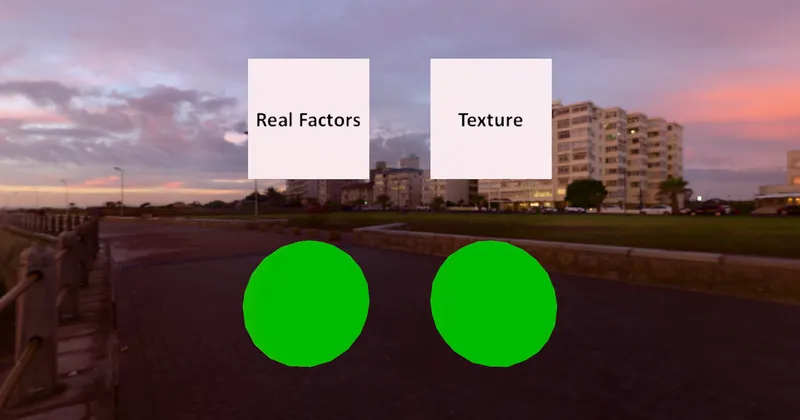

GLTF Basic
Texture Linear Interpolation Test - RedGPU WebGPU Example
Verifies linear texture interpolation after sRGB-to-linear decoding.
sRGB 디코딩 이후 선형 색공간에서의 텍스처 선형 보간 정확도를 검증합니다.

GLTF Basic
Verifies linear texture interpolation after sRGB-to-linear decoding.
sRGB 디코딩 이후 선형 색공간에서의 텍스처 선형 보간 정확도를 검증합니다.
